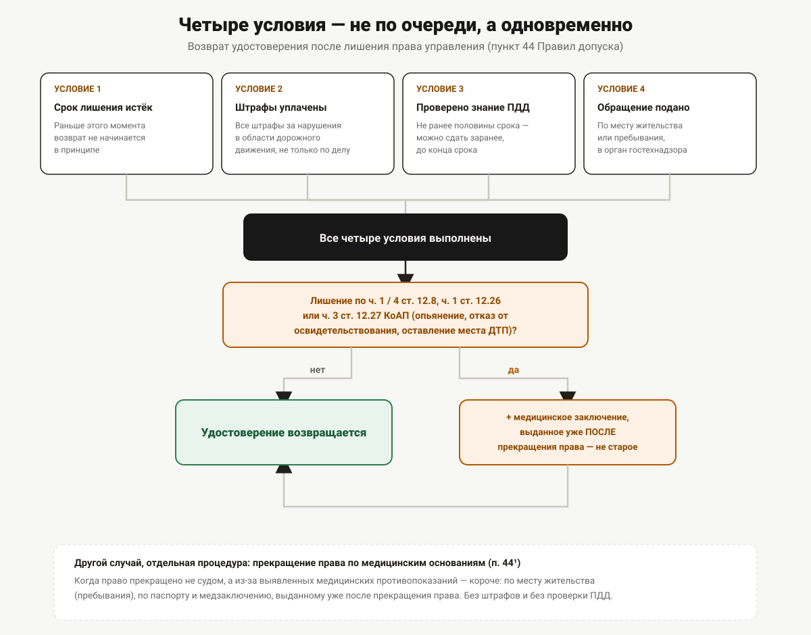

Ответственность за управление без прав
Что грозит за нарушение правил эксплуатации самоходной машины, как устроено лишение права управления и какой порядок возврата удостоверения после окончания срока лишения.
Пока трактор стоит на участке, документ на него можно откладывать бесконечно. Вопрос перестаёт быть теоретическим в тот момент, когда машину останавливает инспектор гостехнадзора или сотрудник ГИБДД на дороге общего пользования. Дальше — не разговор «в следующий раз оформлю», а конкретная норма с конкретной санкцией и не самой очевидной процедурой возврата документа, если до лишения уже дошло.
Что запрещает норма буквально
Пункт 3 Правил допуска к управлению самоходными машинами (постановление Правительства РФ от 12.07.1999 № 796) формулирует это без околичностей: «Управление самоходной машиной лицом, не имеющим при себе документа, подтверждающего наличие у него права на управление самоходными машинами, запрещается». Обратите внимание на формулировку — запрещено управление без документа при себе, а не только без документа как такового. Это тот же принцип, что и в автомобильных правилах: даже если удостоверение получено, но забыто дома, формально это тоже нарушение.
Дальше в этой статье речь идёт о более серьёзном случае — когда права не оформлены в принципе или их действие уже прекращено. Если пока не ясно, нужны ли права вообще на конкретную машину — мотоблок, минитрактор, самоходную косилку, — этот вопрос стоит закрыть до того, как разбираться в санкциях: разбор критерия в статье «Мотоблок и минитрактор: когда права всё-таки нужны». Отдельный и более рискованный сценарий — не отсутствие документа, а документ, полученный в обход обучения по объявлению вида «удостоверение без учёбы»: там к обычной санкции по статье 9.3 добавляется ещё и уголовная сторона вопроса, разобранная в статье «Удостоверение тракториста в обход обучения».
Статья 9.3 КоАП: состав и штраф
Управление самоходной машиной без права на это квалифицируется по статье 9.3 КоАП РФ — «Нарушение правил или норм эксплуатации тракторов, самоходных, дорожно-строительных и иных машин и оборудования». Действующая редакция статьи (проверено 23.09.2026) устанавливает:
| Кто нарушил | Санкция |
|---|---|
| Гражданин | штраф 500–1000 руб. или лишение права управления транспортными средствами на 3–6 месяцев |
| Должностное лицо | штраф 3000–5000 руб. |
Формулировка статьи широкая: она охватывает не только «сел без документа», но и любое нарушение правил или норм эксплуатации техники, поднадзорной гостехнадзору. Управление без права на это — один из вариантов такого нарушения, и именно по этой статье, а не по какой-то отдельной «статье за трактор без прав», квалифицируется большинство подобных случаев.
Отдельная санкция для должностных лиц — указание на то, что отвечает не только сам водитель, но и тот, кто допустил его к технике без проверки документов, — актуально там, где такая техника используется штатно. Какая категория и квалификация обычно требуется по отраслям Пермского края — в статье «Кому в Пермском крае нужен тракторист с удостоверением».
Штраф и лишение прав в первой части — альтернативные наказания, а не то и другое сразу: суд выбирает одно из двух, отталкиваясь от обстоятельств дела.
Лишение — общее для обоих документов
Здесь у темы есть тонкость, которую редко объясняют. КоАП формулирует наказание не как «лишение права управления самоходными машинами», а как «лишение права управления транспортными средствами» — без уточнения категории или вида документа. Это не случайная формулировка: по разъяснению Пленума Верховного Суда РФ (постановление от 24.10.2006 № 18, п. 3), лишение права управления транспортным средством означает, что лицо лишается права управления любыми видами транспортных средств независимо от того, каким из них оно управляло в момент нарушения. А примечание к статье 12.1 КоАП прямо относит к «транспортным средствам» этой главы кодекса, помимо автомобилей, «тракторы, самоходные дорожно-строительные и иные самоходные машины».
Практический вывод: если суд назначил лишение права управления транспортными средствами за нарушение статьи 9.3 (то есть за инцидент с трактором), формально это лишение распространяется и на водительское удостоверение категории B тоже — и наоборот. На практике базы ГИБДД и гостехнадзора не всегда синхронизированы между собой, из-за чего встречаются случаи, когда человек сдаёт один документ и «забывает» про второй. Это не освобождает от обязанности сдать оба: расхождение баз — не основание, а лазейка, которую заметят при следующем обращении за одним из документов.
Отдельный вопрос — применяется ли к самоходным машинам ещё и статья 12.7 КоАП (управление транспортным средством водителем, не имеющим права управления вообще, а не просто нарушившим правила эксплуатации). Формально примечание к статье 12.1 распространяет понятие «транспортное средство» из главы 12 и на тракторы — то есть теоретически статья 12.7 тоже может быть применена. Но однозначной и проверяемой практики по тому, как именно 9.3 и 12.7 разграничиваются применительно именно к самоходным машинам, в открытых источниках найти не удалось: сведения расходятся, а конкретные суммы штрафов по 12.7, которые встречаются в некоторых материалах, относятся, судя по всему, к автомобильным делам. Разбирать эту границу подробно здесь не будем — вопрос требует отдельной юридической проверки, а не пересказа.
Пока идёт лишение — к тракторным экзаменам не допустят
Правила допуска учитывают эту связку напрямую. Пункт 15¹ прямо называет одним из оснований для недопуска к экзамену на право управления самоходными машинами то, что кандидат «лишён права управления транспортными средствами, в случае если срок лишения... не истёк». То есть человек, лишённый автомобильных прав за нарушение ПДД, не сможет параллельно сдать экзамен и получить права тракториста, пока не закончится срок лишения — даже если раньше прав тракториста у него вообще не было.
Это отдельная история от обычной несдачи экзамена: там кандидата просто не пропустили на следующий этап или назначили пересдачу, а здесь на пути стоит административное наказание, снять которое пересдачей нельзя. Что делать, если экзамен не сдан по обычным причинам — в статье «Что делать, если не сдал экзамен».
Как вернуть удостоверение после лишения
Процедура возврата описана в пункте 44 Правил допуска и состоит из нескольких обязательных условий, которые должны выполняться одновременно:
- Срок лишения истёк. Раньше этого момента возврат не начинается в принципе.
- Штрафы уплачены. Норма требует уплаты «в установленном порядке наложенных на него административных штрафов за административные правонарушения в области дорожного движения» — то есть не только по конкретному делу о лишении, но всех штрафов за нарушения в этой сфере.
- Проверено знание Правил дорожного движения. Проверка проводится «по истечении не менее половины срока лишения» и оформляется как сдача теоретического экзамена по ПДД — по тем же правилам, что и обычный теоретический экзамен (пункт 15, пункты 16–17, часть 18, пункты 19, 22 и 27 Правил допуска).
- Обращение — по месту жительства или пребывания при наличии регистрации, в орган гостехнадзора.
Обратите внимание на формулировку пункта 3: проверка знания ПДД проводится «по истечении не менее половины срока лишения» — то есть готовиться к ней и сдавать можно раньше формального окончания срока, но получить удостоверение обратно раньше истечения полного срока всё равно нельзя.
Отдельное условие добавлено для тех, кто лишён права управления за правонарушения по части 1 и части 4 статьи 12.8 (управление в состоянии опьянения), части 1 статьи 12.26 (отказ от медицинского освидетельствования) и части 3 статьи 12.27 (оставление места ДТП его участником) КоАП. Для возврата удостоверения таким лицам дополнительно требуется медицинское заключение, выданное после прекращения действия права на управление — то есть новое, а не то, что было получено перед первичной сдачей на права. Разбор формы этого заключения и того, чем оно отличается от заключения при первичном получении прав, — в статье «Медицинское заключение по форме 071/у», хотя там речь о самом первичном оформлении, а не о возврате после лишения — это соседние, но не одинаковые случаи.

Возврат при прекращении действия права по медицинским основаниям
Правила допуска отдельно описывают ситуацию, когда право на управление прекращено не по решению суда, а по медицинским основаниям — то есть у человека выявлены противопоказания, из-за которых действие права прекращается. Пункт 44¹ описывает возврат для этого случая отдельно от процедуры после лишения: удостоверение возвращается по месту жительства (пребывания) при наличии регистрации, по предъявлении паспорта и медицинского заключения, выданного уже после прекращения действия права. Штрафов и проверки знания ПДД в этой процедуре норма не упоминает — она короче, чем возврат после административного наказания, и относится к другому основанию.
Что нужно знать перед обращением в гостехнадзор
Практический вывод из всей процедуры: возврат прав после лишения — это не автоматическое действие по истечении срока, а отдельное обращение с пакетом условий, часть которых (уплата штрафов, сдача теоретического экзамена по ПДД) нужно выполнить заранее, а не в день, когда формально истёк срок. Где именно в Пермском крае находится соответствующий орган гостехнадзора и как к нему обращаться — в статье «Куда в Перми обращаться за удостоверением тракториста».
Если после возврата документа планируется открыть ещё и новую категорию — это уже отдельная процедура сдачи экзаменов, а не автоматическое расширение возвращённого удостоверения.